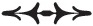

Joan Mitchell, Lee Krasner ve Alice Neel gibi isimleri destekleyen Robert Miller, Gotham Bookmart’ın ikinci katında çizimlerimi görmesinin ardından çalışmalarımı galerisinde sergilememi teklif etti. Yıllarca çalışmalarımı destekleyen Andy Brown, böyle bir fırsatın elime geçmesinden dolayı benim adıma çok sevindi.
5. Cadde’deki geniş ve sofistike galeriyi ziyaret ettiğimde, böyle bir yeri hak ettiğimden emin olamadım. Ayrıca böylesi bir galeride Robert’sız sergi açamayacağımı da düşündüm. Sergide birlikte yer alıp alamayacağımızı sordum.
1978’de Robert adamakıllı fotoğrafçılığa dalmıştı. Ayrıntılı çerçeveleri, geometrik formlarla olan ilişkisini yansıtıyordu. Klasik portreler, eşsiz ve seksi çiçekler üretmiş ve pornografiyi sanat dünyasına sokmuştu. Şimdiki görevi, ışık üzerine uzmanlaşmak ve en yoğun siyahları yakalamaktı.
Robert o dönemde Holly Solomon’ın galerisiyle irtibat halindeydi ve benimle birlikte sergi açmak için izin istedi. Sanat dünyasının politikalarını bilmiyordum; tek bildiğim, birlikte sergi açmamız gerektiğiydi. İlişkimizi temsil eden çalışmalarımızı biraraya getirmeye karar verdik. Sanatçı ve onun esin perisi; bunlar arada sırada değiştiğimiz rollerdi.
Robert, Robert Miller galerisi için eşsiz bir şey yaratmamızı istiyordu. Çektiği en iyi portrelerimi seçmekle işe başladı, onları gerçek boyutlarından büyük şekilde bastı ve Coney Adası’nda çektirdiğimiz fotoğrafı bir seksenlik bir tuvale bastı. Ben de onun bir dizi portresini çizdim ve bu çizimleri onun erotik fotoğraflarına dayandırmaya karar verdim. Bir diğerinin ağzına idrarını yapan genç adam, kanlı testisler ve siyah kauçuk giysi içinde domalmış bir model. Fotoğraflar görece küçük basılmıştı ve ben de bazı görselleri şiirlerle, diğerlerini de çizimlerimle tamamladım.
Bir kısa film yapmayı da düşündük ancak kaynaklarımız kısıtlıydı. Paramızı birleştirdik ve Robert, Lisa Rinzler adında bir sinema öğrencisini filmimizi çekmesi için tuttu.
Storyboard’umuz yoktu. İkimiz de biliyorduk ki, payımıza düşen işi sorgusuz sualsiz yapacaktık. Robert filmi çekmek üzere beni Bond Sokağı’na çağırdığında, bir de sürprizi olduğunu söyledi. Yere bir kumaş serdim, üzerine Robert’ın bana verdiği zarif beyaz elbiseyi, beyaz bale pabuçlarımı, Kızılderili bilek zillerimi, ipek kurdelelerimi ve aile İncil’imi koyup hepsini bohça olacak şekilde bağladım. Görevimiz için hazırdım, Robert’ın dairesine yürüdüm.
Robert’ın benim için ne hazırladığını görmek için heyecanlanıyordum. Tıpkı Brooklyn’de, bir odayı canlı bir enstalasyona çevirdiği zamanlardaki gibiydi. Duvarları beyaz tülle kaplayıp önüne de sadece bir Mephisto heykeli koyarak mitolojik bir atmosfer yaratmıştı.
Bohçamı yere koydum. Robert MDA[49] almamızı önerdi. MDA’in ne olduğundan emin olmasam da, Robert’a tamamen güvendiğim için kabul ettim. Filme başladığımızda MDA’in etkisi altına girip girmediğimin bilincinde değildim. Projedeki rolüme fazlasıyla odaklanmıştım. Beyaz elbiseyi giyip bilek zillerini taktım ve bohçayı yerde açık vaziyette bıraktım. Aklımda şunlar vardı: Vahiy. İletişim. Melekler. William Blake. Şeytan. Doğum. Ben konuşurken Lisa filmi sardı ve Robert da sabit pozları çekmeye başladı. Hiçbir şey söylemeden bana kılavuzluk ediyordu. Sudaki kürek gibiydim, güçlü eliyle beni tutuyordu.
Bir noktada tülleri çekmeye karar verdim; onun yarattığını yok etmiş olacaktım. Uzandım, tülün ucunu tuttum ve donakaldım; fiziksel olarak felç oldum, hareket edemiyor ve konuşamıyordum. Robert hızla bana doğru gelip bileğimden tuttu ve benim rahatladığımı hissedene kadar da bırakmadı. Beni o kadar iyi tanıyordu ki, tek kelime etmeden her şeyin yolunda olduğunu bana iletti.
O an geçip gitti. Tülü bedenime sardım ve ona baktım. O da bu anı hareketli olarak çekti. Zarif elbiseyi ve bileklerimdeki zilleri çıkardım. Tulumumu, askeri postallarımı ve eski siyah kazağımı giydim. Bunlar benim iş kıyafetlerimdi. Geri kalan her şeyi kumaşın içine koydum ve bohçayı omzuma attım.
Filmi seslendirirken Robert ile sık sık tartıştığımız konular üzerine fikir yürüttüm. Sanatçı, tanrılardan gelen ilhamla bağlantıya geçmeyi bekler ancak eserlerini yaratmak için bu baştan çıkarıcı ve tinsel diyarda duramaz. Çalışmasını hayata geçirmek için maddi dünyaya geri dönmelidir. Mistik iletişimle yaratıcılık işçiliğinin dengesini sağlamak, sanatçının sorumluluğundadır.
Mephisto’yu, melekleri ve el yapımı dünyamızın kalıntılarını arkamda bırakıp “Ben dünyayı seçiyorum” dedim.
Grubumla yollara düştük. Robert her gün aradı. “Sergi için çalışıyor musun? Çizim yapıyor musun?” Beni her kaldığım otelden aradı. “Patti, ne yapıyorsun? Çiziyor musun?” Öylesine endişeliydi ki, Chicago’da üç günlük bir boşluk yakalayınca bir resim malzemesi dükkânına gidip en sevdiğim kâğıt olan Arches saten satın aldım ve otel odamın duvarlarını kapladım. Bir diğerinin ağzına işeyen delikanlının fotoğrafını duvara raptiyeledim ve onun üzerinden birkaç çizim yaptım. Her zaman gelgitler halinde çalışırdım. Onları New York’a götürdüğümde Robert, ilk başta erteleme huyumdan duyduğu rahatsızlıktan dolayı bana kıl olsa da, çizimlerden son derece memnun kalmıştı. “Patti,” dedi, “neden bu kadar geciktin?”
Robert ben yokken sergi için üzerinde çalıştığı işleri gösterdi. Filmden bir dizi fotoğraf basmıştı. Çekim sırasında işime kendimi öylesine kaptırmıştım ki, ne kadar çok fotoğraf çektiğini fark etmemiştim bile. Birlikte çektiğimiz en iyi fotoğraflardandı. Filmin son kurgusuna sabit fotoğrafları ekleyince, adını Still Moving (Durağan Hareket) koymaya karar verdi. Bir de film müziği hazırladık; konuşmalarım üzerine elektro gitar çaldım ve “Gloria”dan parçalar ekledik. Böylece çalışmalarımızın pek çok yüzünü göstermiş oldu: fotoğraf, şiir, emprovizasyon ve performans.
Still Moving, Robert’ın müzik ile görsel ifadenin geleceğine dair görüşünün bir yansımasıydı; kendi başına sanat sayılabilecek bir çeşit müzik videosu. Robert Miller filmi desteklemişti, sürekli döndürebileceğimiz küçük bir oda tahsis etti. Bir de afiş hazırlamamızı önerdi; biz de, sanatçı ve ilham perisi olarak karşılıklı hissettiğimiz inancı güçlendirmek adına, birbirimizin resimlerini seçtik.
Sam Wagstaff’in dairesindeki açılış için giyindik. Robert, kolları yukarı katlanmış beyaz bir gömlek, deri bir yelek, kot pantolon ve sivri uçlu ayakkabılar giydi. Ben ipek bir rüzgârlık ve paçaları dar bol kesim bir pantolon giydim. Mucizevî bir şekilde, Robert kıyafetimi beğenmişti. Chelsea Otel ve sonrasında parçası olduğumuz tüm dünyalardan insanlar sergiye gelmişti. Şair ve sanat eleştirmeni Rene Ricard sergi hakkında güzel bir yazı yazıp, çalışmamızı da “Bir Arkadaşlığın Günlüğü” olarak tanımladı. Rene’nin hakkını ödemem zordu; ne zaman çizmeyi bırakmaya karar versem beni azarlar ve devam etmeye zorlardı. Robert ve Rene ile birlikte varaklı çerçeveleri incelerken, o ikisine, vazgeçmeme izin vermedikleri için minnettardım.
Bu bizim birlikte yaptığımız ilk ve son sergiydi. Grubum ve ekibimle yetmişlerdeki çalışmalarım beni Robert’tan ve ortak evrenimizden çok uzaklara taşıdı. Turnelerle dünyayı dolaşırken, Robert’la hiç birlikte yolculuk yapmadığımızı düşündüm. Kitaplar dışında New York’un ötesini birlikte görmemiş, uçakta yan yana, yeni bir gökyüzüne yükselmek ve başka bir dünyaya alçalmak üzere hiç el ele oturmamıştık.
Her şeye rağmen, çalışmalarımızın uzandığı yerleri birlikte keşfetmiş ve birbirimiz için alanlar yaratmıştık. Dünyanın çeşitli sahnelerine o yanımda olmaksızın çıkarken, bazen gözlerimi kapar, onu deri ceketini çıkarıp, benimle birlikte bin bir rakstan oluşan sonsuz bir diyara girerken hayal ederdim.

Bir öğleden sonra 8. Sokak’ta birlikte yürürken, “Because the Night”ın tüm dükkânlarda çaldığını duyduk. “Because the Night” Bruce Springsteen’le birlikte yaptığım bir çalışmaydı ve “Easter” albümümde yer alıyordu. Biz şarkıyı kaydettikten sonra ilk dinleyen kişi Robert olmuştu. Böyle olması için sebeplerim vardı. Bu, Robert’ın hep yapmamı istediği şeydi. 1978 yazında Top 40 listesinde 13. sıraya kadar çıkarak, Robert’ın bir gün hit bir şarkım olmasına dair hayalini gerçekleştirdi.
Robert gülümsüyor ve şarkının ritmine ayak uydurarak yürüyordu. Bir sigara çıkarıp yaktı. Beni o bilim-kurgu yazarından kurtardığı ve sonrasında Tompkins Meydanı’nda dondurma yediğimiz günden bu yana çok şey atlatmıştık.
Robert başarımdan dolayı son derece gururluydu. Kendisi için istediğini ikimiz için de istiyordu. Sigarasından kocaman bir nefes çektikten sonra, sadece benimle konuşurken kullandığı şakadan paylar tonlamasıyla konuştu; hayranlık vardı fakat haset yoktu, bu bizim kardeşlik dilimizdi.
“Patti,” dedi kelimelerin arasını yayarak, “benden önce ünlü oldun.”